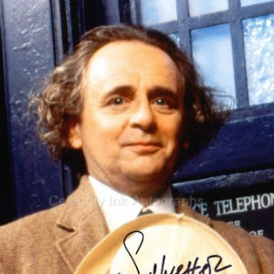

Portrayed by Sylvester McCoy.
|  | Born as Percy James Patrick Kent-Smith in Dunoon, Scotland on the Cowal peninsula, to an Irish mother and English father. His father had been killed in action in World War II a month before he was born. He was raised primarily in Dunoon. In his youth, he trained for the priesthood, but gave this up and spent time working in the insurance industry. He worked in The Roundhouse box office for a time, where he was discovered by Ken Campbell. He currently resides in London. |